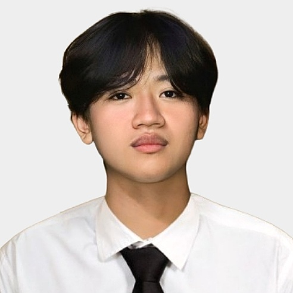

Cedrick Puse
Contant Information
Email: cedrick.puse00@gmail.com
Phone: 09296620126
Address: 18 Regadera St. Sto Nino Marikina City
Objective
Being a dedicated third-year Information Systems student of the
Technological University of the Philippines, I am focused on using my
business and programming skills to create innovative technological
solutions. With a strong passion for exploring novel technologies, I
am excited about projects that integrate requirements from businesses
with advanced digital solutions to ensure efficiency and growth in the
technology industry.
Education
-
BS in Information Systems - Technological
University of The Philippines (2022 - 2024)
-
High School Diploma - Sta Elena High School (2018 -
2022)
Skills
| Programming Languages |
Tools & Technologies |
| C |
Figma |
| Java |
HTML |
| C++ |
|
Projects
- Project 1: Budgeting App - A simple Budgeting App and you can tract your Money or Budget for a day
- Project 2: Simulation Game - This engaging simulation game, where the user will chose how will the protagonist story will end. As users navigate various scenarios, they'll encounter unique challenges and relationships, each decision leading to different endings.
Project 3: Student Portal - I made a GUI student portal where you can add student, delete, edit or you can remove. You can also see the added student in MySQL.